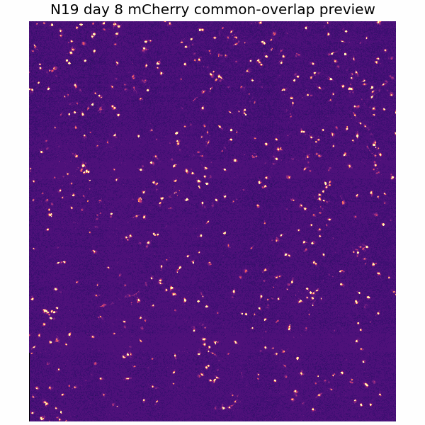
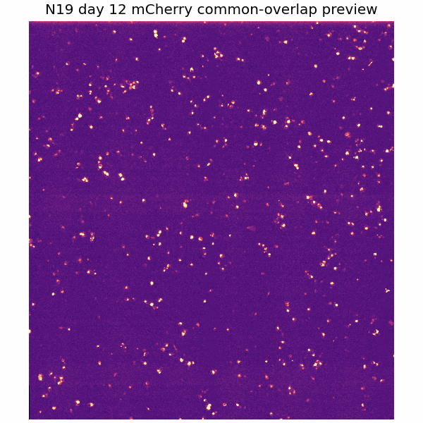
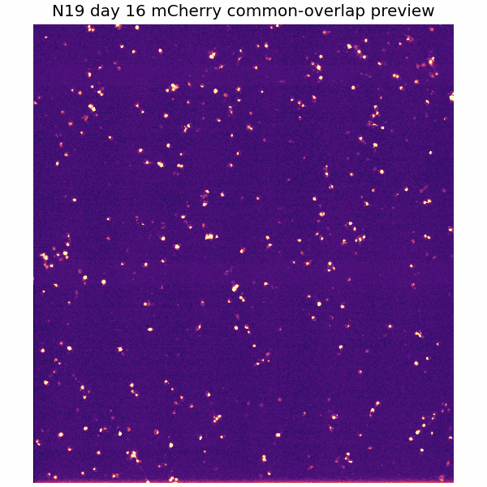
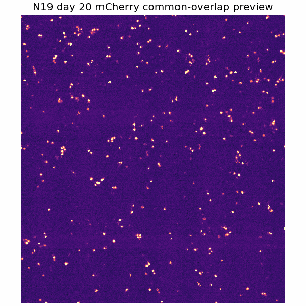
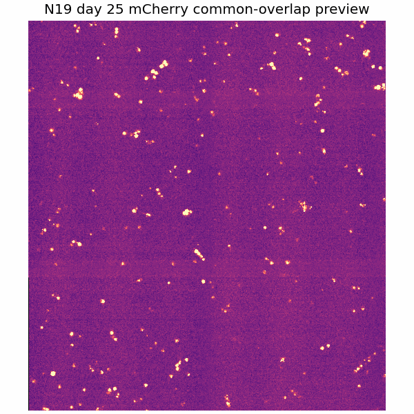
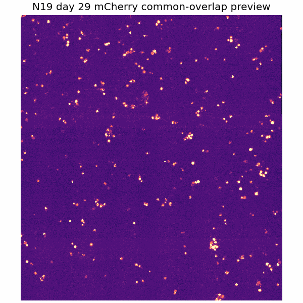
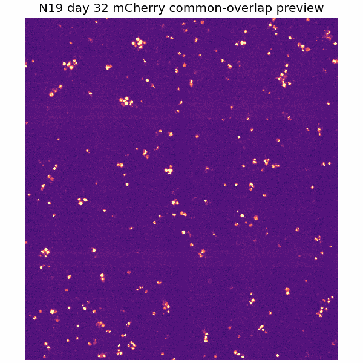
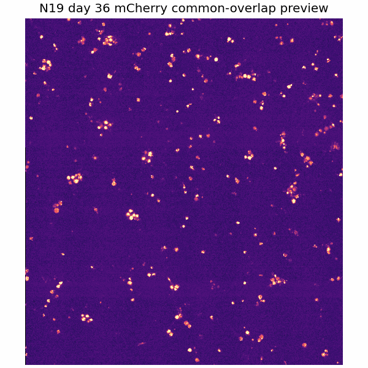
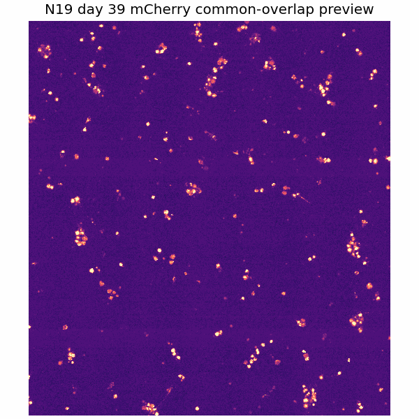

ROI Readiness
2 large-shift days. Neuron ROI crops have not been generated yet.
Pass days: 8, 12, 20, 25, 32, 36, 39
Review days: 16, 29
Exclude from ROI tracking: none
Available Outputs
| Registered stack available | yes |
| Common-overlap stack available | yes |
| QC montage available | yes |
| Neuron ROIs generated | not yet |
- Registered full
- Large microscopy file stored locally/shared drive
- Common overlap
- Large microscopy file stored locally/shared drive
- QC montage
- LOCAL_PROCESSED_OUTPUT/full_mcherry_valid_queue_abc/wells/N19/qc/N19_registration_qc_montage.png
- QC CSV
- LOCAL_PROCESSED_OUTPUT/full_mcherry_valid_queue_abc/wells/N19/qc/N19_registration_qc.csv
Dashboard Previews









Per-Day QC
| Day | dy | dx | |shift| | Overlap | Status | Action |
|---|---|---|---|---|---|---|
| 8 | 0.0 | 0.0 | 0.0 | 1.000 | pass | pass |
| 12 | 184.1 | 0.0 | 184.1 | 0.936 | pass | pass |
| 16 | -555.7 | 0.0 | 555.7 | 0.806 | warning_large_shift | review |
| 20 | -38.6 | 0.0 | 38.6 | 0.987 | pass | pass |
| 25 | -360.7 | 0.0 | 360.7 | 0.874 | pass | pass |
| 29 | 0.0 | -919.7 | 919.7 | 0.679 | warning_large_shift | review |
| 32 | -211.9 | 0.0 | 211.9 | 0.926 | pass | pass |
| 36 | -49.2 | 0.0 | 49.2 | 0.983 | pass | pass |
| 39 | 0.0 | -481.1 | 481.1 | 0.832 | pass | pass |
ROI / neuron candidates
5 preliminary pass-only ROI candidates generated. Manual identity status is uncertain_identity by default.
Review days listed but not used: 16|29
Excluded days: none